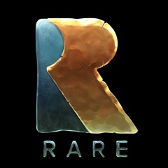
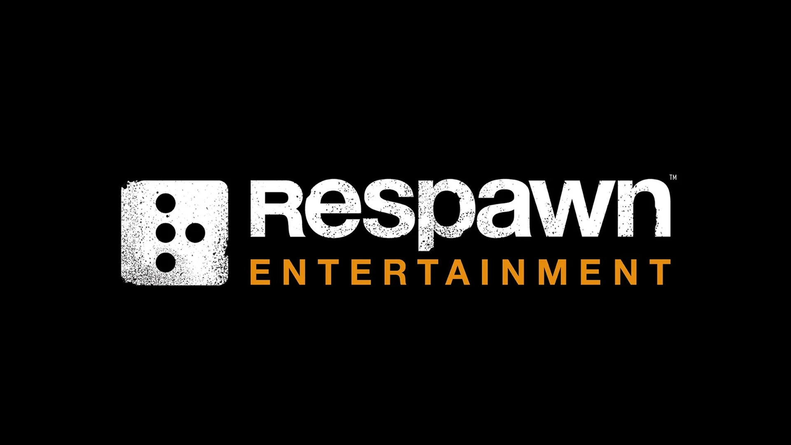
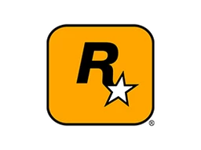

Les studios
Comme les jeux vidéo, les studios sont une autre partie importante des sujets qui m'ont le plus marqué. Voici donc ceux que j’ai suivis et dont j’ai pris le temps d’apprendre l’histoire. Pour certains, juste en me basant sur les jeux qu’ils ont créés je les classe parmi mes studios préférés.
Les critères qui déterminent quels sont les studios que j’apprécie sont la passion, le rythme de sortie et leur politique d’entreprise : est-ce que les studios créent des jeux pour les joueurs ou les investisseurs ? Est-ce qu’ils conçoivent des jeux auxquels eux-mêmes aimeraient jouer, ou bien cherchent-ils simplement à plaire au plus grand nombre ?
Bien sûr, le choix n’appartient pas toujours entièrement au studio, mais cela me semble important.
Le rythme de sortie est également révélateur : il peut indiquer si les jeux sont réalisés par passion ou pour le profit. Une série avec un nouvel opus chaque année est souvent le signe d’un travail précipité.
La composition de l’entreprise en dit long également. La quantité d’employés comparée aux jeux et aux dates de sortie.
Pour finir, il y a aussi les entreprises comme Nintendo. Leur acharnement à éliminer d’internet chaque projet, chaque créateur qui aurait un moindre lien avec leur marque, en tant que moddeur, c’est une politique qui me dérange. L’univers du jeu vidéo est vaste et plein de potentiel, il est rare que toutes les œuvres dérivées soit mauvaise, surtout lorsqu’on met quelque chose d’aussi riche entre les mains de gens talentueux et passionnés.
Voici donc un petit récapitulatif des studios qui m’inspirent et me fascinent :
- Valve : Créateur de nombre de jeux cultes, propriétaires de Steam.
- Rare : Un studio novateur, avec une histoire riche et très parlante.
- Infinity ward / Respawn : Les gens qui ont élevé la série Call Of Duty au sommet et qui ont plus tard créer titanfall au sein du nouveau studio "Respawn Entertainment".
- Rockstar Games : Ce studio représente la liberté totale de création à mes yeux.
- Sandfall Interactive : Sandfall est le studio français composé de peu de membres, passioné qui ont fait un jeu exceptionnel avec les meilleures intentions, il représente le rêve de gosse réalisé.




